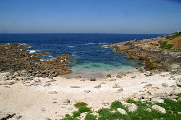
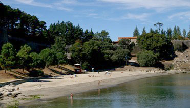
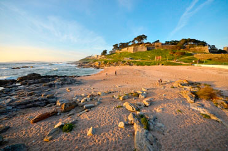

Baiona
Atrás-

Playa de Os Frades
-

Playa de A Barbeira
-

Monte Real Club de Yates de Baiona
-

Puerto Deportivo de Baiona
-

Playa de A Concheira
-

Sendero Azul de Baiona y Fortaleza de Monterreal
-

Playa de A Ribeira
-

Museo de la Carabela La Pinta
-

Playa de Santa Marta
-

Ermita de Santa Marta
-

Playa de A Ladeira
-

LIC A Ramallosa
-

Puente Románico de A Ramallosa